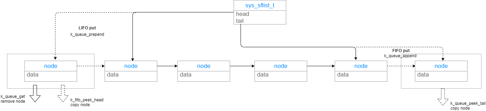

数据传递-FIFO/LIFO¶
API¶
相似API¶
FIFO和LIFO API都是用宏包装queue的API实现，它们有一组类似的发送接收API，这里放在一起介绍
#define k_fifo_init(fifo) #define k_lifo_init(lifo)
作用：初始化一个struct k_fifo/strut k_lifo fifo/lifo: struct
k_fifo/strut k_lifo
#define k_fifo_put(fifo, data) #define k_lifo_put(lifo, data)
作用：将数据放入fifo/lifo fifo/lifo：数据要放入的fifo/lifo data:
要放入fifo/lifo的数据
#define k_fifo_alloc_put(fifo, data) #define k_lifo_alloc_put(lifo, data)
作用：fifo/lifo分配一个空间，将数据放入
fifo/lifo：数据要放入的fifo/lifo data: 要放入fifo/lifo的数据
#define k_fifo_get(fifo, timeout) #define k_lifo_get(lifo,timeout)
作用：从fifo/lifo读出数据 fifo/lifo：要读的fifo/lifo data: 读出的数据
FIFO特殊API¶
FIFO比LIFO多一些API #define k_fifo_cancel_wait(fifo)
作用：放弃等待，让第一个等待的fifo的thread退出pending，k_fifo_get的数据将是NULL
fifo: 操作的fifo
#define k_fifo_put_list(fifo, head, tail)
作用：将一个单链表加入到fifo中 fifo: 操作的fifo head: 单链表的第一个节点
tail: 单链表的最后一个节点
#define k_fifo_put_slist(fifo, list)
作用：将一个单链表加入到fifo中，这里单链表对象为sys_slist_t fifo:
操作的fifo list: sys_slist_t 单链表
#define k_fifo_is_empty(fifo)
作用：检查fifo是否为空
fifo: 要检查的fifo
#define k_fifo_peek_head(fifo)
作用：peek fifo头部上的节点(下个将会被read的数据)，但不会将数据从fifo删除
fifo: 被peek的fifo 返回：返回peek的数据
#define k_fifo_peek_tail(fifo)
作用: peek fifo尾部上的节点(FIFO中最后进入的数据)，但不会将数据从fifo删除 fifo: 被peek的fifo 返回：返回peek的数据
使用说明¶
可以在ISR中put fifo/lifo.也可在ISR内get fifo/fifo，但不能等待。 fifo/lifo不限制数据项的多少。
初始化¶
经过初始化的fifo/lifo才能被使用，下面两种方法是一样的，显示定义
struct k_fifo my_fifo;
struct k_lifo my_lifo;
k_fifo_init(&my_fifo);
k_lifo_init(&my_lifo);
隐式定义：
K_FIFO_DEFINE(my_fifo);
K_LIFO_DEFINE(my_lifo);
写数据¶
这里用fifo演示put，用Lifo演示alloc_put
//使用put发送数据，最开始的word必须保留，用于存放queue，这也就是为什么要求4对其的原因
//使用alloc_put没有这个限制
struct data_item_t {
void *fifo_reserved; /* 1st word reserved for use by fifo */
...
};
struct data_item_t fifo_tx_data;
char lifo_tx_data[32];
void producer_thread(int unused1, int unused2, int unused3)
{
while (1) {
/* create data item to send */
//fifo_tx_data使用的是put，因此最开始的4个字节不能使用
fifo_tx_data = ...
lifo_tx_data = ...
/* send data to consumers */
k_fifo_put(&my_fifo, &fifo_tx_data);
//alloc_put时，queue会从线程池中分配出内存存放lifo，所以不需要保留开始4个字节
//在get时，queue会自动将其释放掉
k_lifo_alloc_put(&my_lifo, &lifo_tx_data);
...
}
}
读数据¶
void consumer_fifo_thread(int unused1, int unused2, int unused3)
{
struct data_item_t *rx_data;
while (1) {
rx_data = k_fifo_get(&my_fifo, K_FOREVER);
/* process fifo data item */
...
}
}
void consumer_lifo_thread(int unused1, int unused2, int unused3)
{
struct data_item_t *rx_data;
while (1) {
rx_data = k_lifo_get(&my_lifo, K_FOREVER);
/* process lifo data item */
...
}
}
实现¶
前面已经提到过fifo/lifo都是使用queue实现，fifo/lifo是直接包queue的API,每一个fifo/lifo API都对应一个queue的API，可以说fifo/lifo就是queue的使用方法不一样，先看结构体就可以看出使用的就是queue
FIFO/LIFO¶
struct k_fifo {
struct k_queue _queue;
};
struct k_lifo {
struct k_queue _queue;
};
每个fifo/lifo都有一个对应的queue API，这里列出来,更详细的可以看include/kernel.h，下面斜体加粗的就是fifo/lifo区别所在 k_fifo_init->k_queue_init k_fifo_cancel_wait->k_queue_cancel_wait k_fifo_put->k_queue_append k_fifo_alloc_put->k_queue_alloc_append k_fifo_put_list->k_queue_append_list k_fifo_put_slist->k_queue_merge_slist k_fifo_get->k_queue_get k_fifo_is_empty->k_queue_is_empty k_fifo_peek_head->k_queue_peek_head k_fifo_peek_tail->k_queue_peek_tail k_lifo_init->k_queue_init k_lifo_put->k_queue_prepend k_lifo_alloc_put->k_queue_alloc_prepend k_lifo_get->k_queue_get
Queue¶
从上一节可以看出FIFO就是用queue实现的，因此我们继续分析queue
Queue初始化¶
初始化：建立一个wait_q，建立一个单项标志链表
添加数据到queue¶
添加数据到queue基本都是通过queue_insert完成 k_queue_append->queue_insert： 在链表尾部插入 k_queue_insert->queue_insert: 在指定节点后插入 k_queue_prepend->queue_insert：在链表头部插入 z_impl_k_queue_alloc_append->queue_insert：从thread pool中分配节点，并插入到尾部 z_impl_k_queue_alloc_prepend->queue_insert：从thread pool中分配节点，并插入到头部 z_impl_k_queue_peek_head -> z_queue_node_peek: 从链表中读取头，但不删除该节点 z_impl_k_queue_peek_tail -> z_queue_node_peek: 从链表中读取尾，但不删除该节点
static s32_t queue_insert(struct k_queue *queue, void *prev, void *data,
bool alloc)
{
k_spinlock_key_t key = k_spin_lock(&queue->lock);
#if !defined(CONFIG_POLL)
struct k_thread *first_pending_thread;
//获取等待queue的thread，如果有的话，将数据提供给该thread，引发调度，直接返回
first_pending_thread = z_unpend_first_thread(&queue->wait_q);
if (first_pending_thread != NULL) {
prepare_thread_to_run(first_pending_thread, data);
z_reschedule(&queue->lock, key);
return 0;
}
#endif /* !CONFIG_POLL */
/* Only need to actually allocate if no threads are pending */
if (alloc) {
//要alloc节点空间
struct alloc_node *anode;
//从线程池中alloc节点空间
//并初始化数据
anode = z_thread_malloc(sizeof(*anode));
if (anode == NULL) {
k_spin_unlock(&queue->lock, key);
return -ENOMEM;
}
anode->data = data;
//初始化节点的时候，设置标志为1，表示是alloc的，在get的时候就需要释放
sys_sfnode_init(&anode->node, 0x1);
data = anode;
} else {
//如果data中自带节点，则无需alloc
sys_sfnode_init(data, 0x0);
}
//将节点插入到指定节点之后
//prev如果为NULL，data节点会被插入到单链表的最开始
sys_sflist_insert(&queue->data_q, prev, data);
//如果配置了poll，会通知queue条件已经满足
#if defined(CONFIG_POLL)
handle_poll_events(queue, K_POLL_STATE_DATA_AVAILABLE);
#endif /* CONFIG_POLL */
//引发调度
z_reschedule(&queue->lock, key);
return 0;
}
当传入参数data是净数据时(没有在data的最开始预留node位置)，那么在insert的使用需要用alloc指定要分配节点
从Queue中读取数据¶
使用k_queue_get->z_impl_k_queue_get从queue中读取数据，读取数据时数据从queue中删除，实际的删除动作就是从链表中将节点移除
void *z_impl_k_queue_get(struct k_queue *queue, s32_t timeout)
{
k_spinlock_key_t key = k_spin_lock(&queue->lock);
void *data;
if (likely(!sys_sflist_is_empty(&queue->data_q))) {
sys_sfnode_t *node;
//如果链表不为空，从链表中取出头节点
node = sys_sflist_get_not_empty(&queue->data_q);
//从节点中取出数据，如果node是从线程池中分配的，将其释放
data = z_queue_node_peek(node, true);
k_spin_unlock(&queue->lock, key);
//取到数据后立即返回
return data;
}
if (timeout == K_NO_WAIT) {
k_spin_unlock(&queue->lock, key);
return NULL;
}
#if defined(CONFIG_POLL)
k_spin_unlock(&queue->lock, key);
return k_queue_poll(queue, timeout);
#else
//没有取到数据，进入等待
//可以结合发送看，如果有线程在等待queue数据，那么新进入queue的数据是不会进入链表的
int ret = z_pend_curr(&queue->lock, key, &queue->wait_q, timeout);
return (ret != 0) ? NULL : _current->base.swap_data;
#endif /* CONFIG_POLL */
}
从node中提取数据¶
从链表中peek或者移出的node，需要使用下面API从node中提取数据
void *z_queue_node_peek(sys_sfnode_t *node, bool needs_free)
{
void *ret;
if ((node != NULL) && (sys_sfnode_flags_get(node) != (u8_t)0)) {
//检查到flag 不为0，说明加入链表的node是从线程池中分配
struct alloc_node *anode;
//这里取出数据后释放node
anode = CONTAINER_OF(node, struct alloc_node, node);
ret = anode->data;
if (needs_free) {
k_free(anode);
}
} else {
//不是从线程池分配的node，直接返回
ret = (void *)node;
}
return ret;
}
如果是移出的node在Insert的时候是从线程池alloc出来的，那么在这里需要needs_free=true指定要free空间。如果是Peek的node数据时，则只用提取数据，例如：
static inline void *z_impl_k_queue_peek_head(struct k_queue *queue)
{
return z_queue_node_peek(sys_sflist_peek_head(&queue->data_q), false);
}
static inline void *z_impl_k_queue_peek_tail(struct k_queue *queue)
{
return z_queue_node_peek(sys_sflist_peek_tail(&queue->data_q), false);
}
放弃等待数据¶
k_queue_get的时候如果queue内没有数据，允许进行等待。等待期间可以使用k_queue_cancel_wait放弃等待
void z_impl_k_queue_cancel_wait(struct k_queue *queue)
{
k_spinlock_key_t key = k_spin_lock(&queue->lock);
#if !defined(CONFIG_POLL)
struct k_thread *first_pending_thread;
//获取正在等待的第一个线程
first_pending_thread = z_unpend_first_thread(&queue->wait_q);
//让该线程退出等待
if (first_pending_thread != NULL) {
prepare_thread_to_run(first_pending_thread, NULL);
}
#else
handle_poll_events(queue, K_POLL_STATE_CANCELLED);
#endif /* !CONFIG_POLL */
//重调度
z_reschedule(&queue->lock, key);
}
关于poll¶
一般情况下queue等待数据是通过让其thread 等待queue的wait_q实现，一旦配置poll后将不再使用该机制，而是通过poll，queue get使用k_queue_poll等待queue有数据，因此可能和其它thread等待poll条件发生冲突
static void *k_queue_poll(struct k_queue *queue, s32_t timeout)
{
struct k_poll_event event;
int err, elapsed = 0, done = 0;
k_spinlock_key_t key;
void *val;
u32_t start;
//初始化要等待的条件
k_poll_event_init(&event, K_POLL_TYPE_FIFO_DATA_AVAILABLE,
K_POLL_MODE_NOTIFY_ONLY, queue);
if (timeout != K_FOREVER) {
start = k_uptime_get_32();
}
do {
event.state = K_POLL_STATE_NOT_READY;
//开始poll
err = k_poll(&event, 1, timeout - elapsed);
if (err && err != -EAGAIN) {
return NULL;
}
//通知后去链表拿数据
key = k_spin_lock(&queue->lock);
val = z_queue_node_peek(sys_sflist_get(&queue->data_q), true);
k_spin_unlock(&queue->lock, key);
//如果没拿到数据，说明可能被其它thread将数据拿走，需要重新等待
if ((val == NULL) && (timeout != K_FOREVER)) {
elapsed = k_uptime_get_32() - start;
done = elapsed > timeout;
}
} while (!val && !done);
return val;
}
插入链表数据¶
queue也提供2个API将数据以链表的形式插入到queue中,区别是k_queue_append_list插入后不会影响被插入链表，而k_queue_merge_slist插入链表后会把链表清空
int k_queue_append_list(struct k_queue *queue, void *head, void *tail)
{
/* invalid head or tail of list */
CHECKIF(head == NULL || tail == NULL) {
return -EINVAL;
}
k_spinlock_key_t key = k_spin_lock(&queue->lock);
#if !defined(CONFIG_POLL)
struct k_thread *thread = NULL;
//有等待的thread全部取出来消化这个链表
//注意，消化完后原来的链表还在
if (head != NULL) {
thread = z_unpend_first_thread(&queue->wait_q);
}
while ((head != NULL) && (thread != NULL)) {
prepare_thread_to_run(thread, head);
head = *(void **)head;
thread = z_unpend_first_thread(&queue->wait_q);
}
//没有消化完的加入到queue中
if (head != NULL) {
sys_sflist_append_list(&queue->data_q, head, tail);
}
#else
sys_sflist_append_list(&queue->data_q, head, tail);
handle_poll_events(queue, K_POLL_STATE_DATA_AVAILABLE);
#endif /* !CONFIG_POLL */
z_reschedule(&queue->lock, key);
return 0;
}
int k_queue_merge_slist(struct k_queue *queue, sys_slist_t *list)
{
int ret;
/* list must not be empty */
CHECKIF(sys_slist_is_empty(list)) {
return -EINVAL;
}
//和k_queue_append_list功能一样
ret = k_queue_append_list(queue, list->head, list->tail);
CHECKIF(ret != 0) {
return ret;
}
//但消化完链表后，原有链表被清空
sys_slist_init(list);
return 0;
}
图例¶
下面用一张图简单说明FIFO/LIFO和queue操作之间的关系

可以看到FIFO是通过k_queue_appen将数据加入到queue的链表尾，LIFO通过k_queue_prepend将数据加入到queue的链表头，而FIFO/LIFO读数据都是用k_queue_get从链表头读数据，所以达到了FIFO先进先出，LIFO后进先出的目的。https://docs.zephyrproject.org/latest/reference/kernel/data_passing/fifos.html https://docs.zephyrproject.org/latest/reference/kernel/data_passing/lifos.html